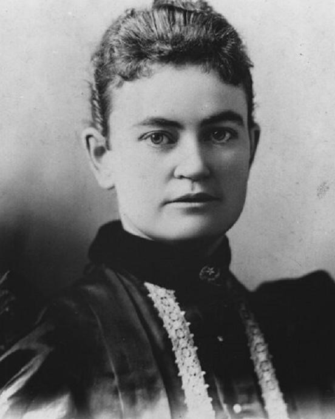

This shameless embrace of femininity and complete disregard for objectivity is why stunt journalism was popular and impactful during its time. A defining aspect of Bly’s work, and other stories by stunt girls, is that men couldn’t have written those stories. Even if male journalists were able to go undercover, they couldn’t report on the story from the necessary angle to make it as impactful. In these stories, even if the gender of the subjects is redacted, it is impossible to remove the reporters’ gender from the story. Stunt girls wove their experiences as women into the smallest details. Before this moment, women hadn’t dared brazenly embracing womanhood in journalism.
Those small details make the stories multi-dimensional, more intriguing to readers. In “10 Days in a Madhouse,” Bly talks about her swear “taking the curl out of [her] bangs,” being forced to wear a “bad-looking shawl,” the judge referring to her as “someone’s sweetheart,” and Bly joking about the “uneven” length of her skirt (Bly, “10 Days in a Madhouse”). These comments don’t advance the journalistic aspect of her story, the readers can still understand and be enraged by the deplorable conditions in the asylum without these comments. This narrative-style enraptured readers because it completely disregarded the tradition of women suppressing their gender in reporting and forced readers to experience the story from a woman's perspective.

The poor conditions at the Blackwell Island Asylum were mostly common knowledge, one of the reasons why Pulitzer was interested in breaking this story (Brian, 124). Bly’s exposé wasn’t a groundbreaking investigation. Her series garnered so much attention and landed on the frontpage of the New York World because she wasn’t just a reporter who went undercover, she was a female reporter who went undercover.
An important and unacknowledged aspect of stunt journalism is how these women positively depict the female experience, even in the darkest moments. Women have this innate urge to protect and take care of each other that has followed them through generations. This urge is exemplified in Bly’s “10 Days in a Madhouse” in multiple forms. First, as part of Bly’s plan to have herself institutionalized, she stayed at a temporary home for women in order to publicly act “insane” (Bly). During her antics, some of the women were so scared that most of them refused to sleep near Bly and one even had nightmares about her (Bly). The women who weren’t scared of Bly, though, teased and tormented her with questions that would’ve been “cruel” if she hadn’t been acting. While this seems to disprove the argument that women protect and care for each other, one woman, Mrs. Caine, “displayed true womanly feeling” and came to Bly’s aid (Bly, 26).
With the rest of the house split between locking Bly up out of fear and the other half content to harass her, it would have been easier for Mrs. Caine to, at the very least, ignore Bly’s existence. While we don’t know if the woman was frightened, Bly does describe Caine coming to her aid and defending her against everyone else. Caine took the bed closest to Bly, took care of her, and spoke to Bly “as a mother would do to an ailing child” (Bly, 26). This compassion and potentially bravery for a seemingly insane and possibly dangerous stranger is, again, womanhood.
The innate desire to build a community with each other continues while Bly is at the asylum. Her first day at the asylum, a nurse warns Bly that she shouldn’t expect any kindness there because she won’t receive it (Bly, 51). Between the cruel nurses and the patients stuck in what Bly describes as a “human rat trap” who are just focused on survival, there shouldn’t have been much kindness in those walls. Still, during Bly’s first meal when another patient steals the bread off her tray, another patient offers theirs out of pity (Bly, 48). This offer is incredibly significant because the patients at Blackwell Island Asylum were mostly fed spoiled, inedible food. That woman’s empathy towards a newcomer is just one of the many examples of the community these women built amongst themselves in the cruelest of places. Bly returned the empathy, though, and advocated for the other patients during her stay, even when a nurse threatened her (Bly, 59). Still, dedicated to the community she formed during those 10 days, Bly asked the nurses to help elderly patients who were getting sick, begged the doctors for warmer clothes for other patients, and reported to the doctors that the nurses were physically abusing the patients (Bly).
After Bly’s debut as a stunt girl, others quickly followed suit. Girl Reporter, an unidentified journalist for the Chicago Times, went undercover to investigate illegal abortions in Chicago. Just like Bly, Girl Reporter’s story was uniquely female and embodied female camaraderie.
During her reporting, Girl Reporter visited over 200 physicians with a coworker, and wrote an exposé naming the doctors and midwives partaking in this practice, condemning them for infanticide (Todd, 1). Because abortion was illegal and an incredibly controversial procedure, this story was important to the masses. Most importantly, though, only a woman could thoroughly investigate it, and Girl Reporter reveled in that (Todd, 4). A man couldn’t depict the shame and ridicule unmarried pregnant women faced. And even with Girl Reporter’s avid disagreement with the procedure, she tried to understand the difficulty women in this predicament face, and inturn found the investigation “tiring” (Girl Reporter). It is a universally feminine experience to be humiliated and chastised while male counterparts, like the journalist who was accompanying Girl Reporter, are not reprimanded in the slightest. The biggest impact of Girl Reporter’s series, though, was that she forced readers to understand that women felt “embarrassed, threatened, [and] angry” when talking about sex (Todd, 3). To the dismay of many readers, tons of whom wrote angry letters to the editors, Chicago residents weren’t allowed to ignore women’s experiences.
Even as Girl Reporter vehemently condemned abortion, she still described a “righteous anger” when the doctors condescended her, assuming she’s an “adventuress,” which shouldn’t affect her because she obviously agrees that women shouldn’t seek abortions (Todd, 3). More importantly, though, she still provides detailed instructions on how to get an abortion, including the exact medications and dosages needed for one (Girl Reporter).
While her identity was never revealed and no one was able to ask why she did so, it is easy to speculate that she provided these details because of the loyalty women have to each other. After temporarily experiencing the dread and shame of women who wanted an abortion, this reporter decided to help those women and honor their camaraderie, even though she condemned the procedure they were seeking.
Eva Gay, who’s real name is Eva McDonald Valesh, was a labor activist in Minnesota who inspired labor strikes and went on to pioneer the labor reform journalism field. The editor of the St. Paul Globe sought her out and asked her to go undercover at various factories to report on women’s working conditions. Again, during this time gender discrimination was institutionalized, so it was normal for employers to subject women to unsafe conditions while paying them an unlivable wage. This series, though, was an attempt to force women to realize their own plight, stressing that the issues she covered were fixable (Faue, 19).
A male reporter wouldn’t have been able to write Gay’s series. Even if he was able to go undercover as a foreman in these factories, the articles would be unsuccessful without a woman’s analysis. Sexism was ingrained in society during this time that a man would likely agree with the foreman that women shouldn’t be allowed to talk and sing during work because it affects productivity (Gay). A male journalist might also not take issue with the factories painting windows because “women ought to be kept where men couldn’t see them” (Gay).
Similar to Bly, as Gay describes the threats of violence and sexual harassment working women face, her femininity is also woven through the story. She isn’t entirely focused on the sexual harassment, threats of violence, and social discrimination working women face (Gay). Gay also follows these women to their group homes and writes about “Sundays out” and laughter that bubbled to the surface during work (Gay). Her articles are a beautifully crafted call to action and celebration of working women in a time period that was not welcoming to them.
Gay, unlike Bly and Girl Reporter, intentionally targeted women with her work, hoping to inspire them. She was more than just a journalist. She was a “witness, organizer,” and reporter for the labor strikes she inspired (Writing). Further, even in her individual articles, we see the camaraderie working women have amongst each other. They warn her about the harsh realities of the jobs, offering advice on how to stay safe at work, make light of the discrimination they face, and even invite her home with them after work (Faue, 29). There’s no competition between each other, just an urge to help and protect each other.